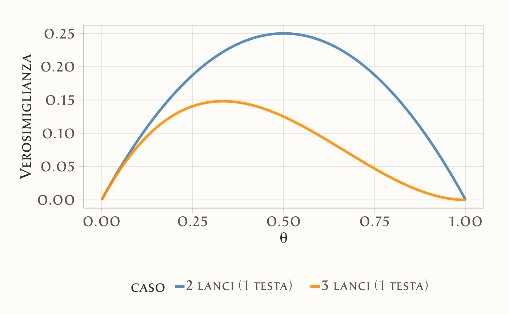
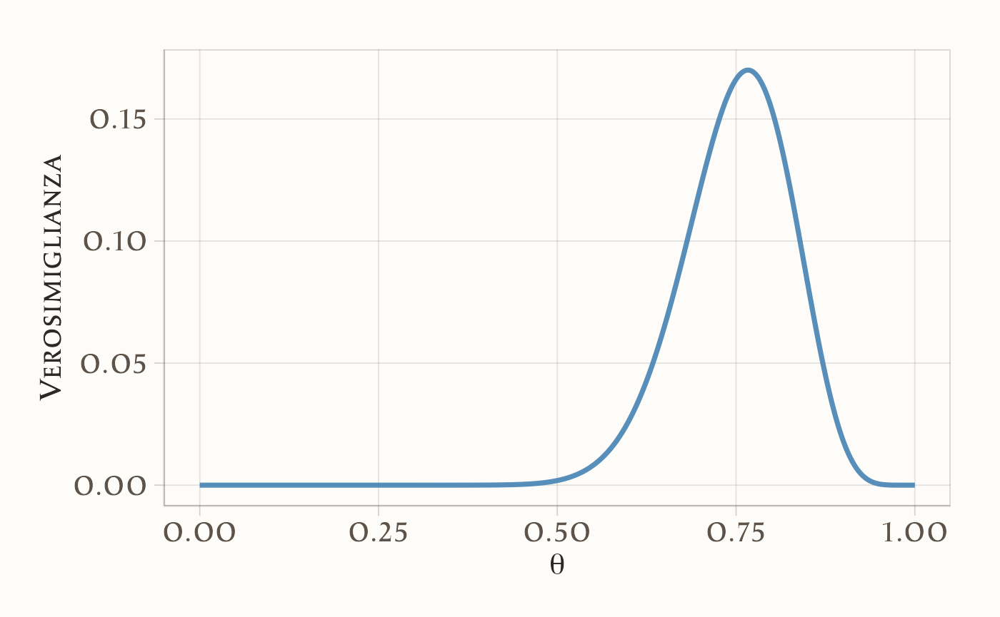
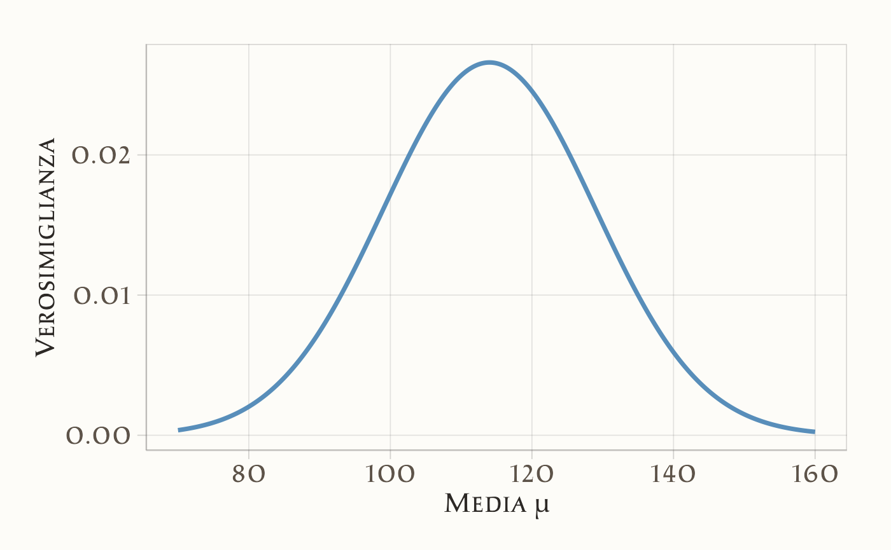
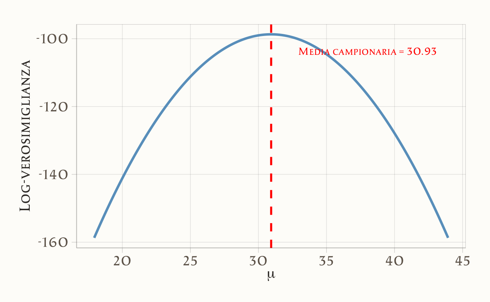
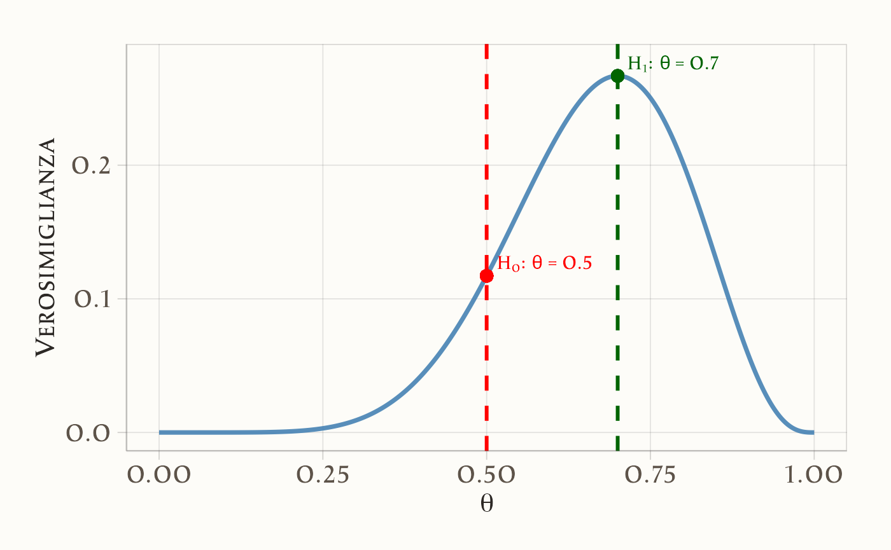

17 La verosimiglianza
“In Bayesian inference the likelihood plays the central role: it tells us how to update our prior beliefs in the light of observed data.”
– Dennis V. Lindley, Making Decisions (1971)
Introduzione
I ricercatori utilizzano modelli matematici per descrivere e prevedere il comportamento dei dati osservati. Questi modelli si distinguono per la loro struttura funzionale, che definisce le relazioni tra variabili osservate e parametri teorici. La selezione del modello ottimale avviene attraverso un confronto sistematico tra le previsioni teoriche generate dai diversi modelli e l’evidenza empirica. Il modello che mostra il miglior accordo con i dati sperimentali viene considerato la rappresentazione più adeguata del fenomeno studiato.
In questo processo di valutazione, la funzione di verosimiglianza svolge un ruolo fondamentale: per ogni possibile valore dei parametri, essa quantifica quanto siano plausibili i dati osservati sotto l’ipotesi che siano stati generati da quel specifico modello. In altre parole, la verosimiglianza costruisce una mappa di plausibilità parametrica, identificando le combinazioni di parametri che massimizzano la coerenza tra modello e realtà osservata.
Panoramica del capitolo
- Misura della plausibilità dei parametri alla luce dei dati osservati
- Applicazione a distribuzioni binomiali (lancio di monete) e gaussiane (misura del QI)
- Metodi per identificare i parametri più plausibili con implementazioni in R
- Utilizzo del rapporto di verosimiglianze e criteri aggiustati (AIC)
- La verosimiglianza come componente fondamentale per l’inferenza bayesiana
17.0.1 Il principio della verosimiglianza
Il principio della verosimiglianza costituisce il fondamento dell’inferenza statistica moderna, fornendo un metodo per quantificare la plausibilità di un valore parametrico (come la media di una popolazione o l’effetto di una terapia) alla luce dei dati osservati.
Concettualmente, la verosimiglianza non misura la probabilità che un’ipotesi sia vera, ma valuta quanto i dati osservati siano coerenti con una specifica ipotesi sul parametro. Rappresenta una misura di sostegno empirico: valori parametrici che rendono i dati più probabili ricevono maggiore supporto dall’evidenza.
Definizione 17.1 Sia \(Y\) un vettore aleatorio (come l’insieme dei punteggi dei partecipanti a un test) la cui distribuzione dipende da un parametro sconosciuto \(\theta\) (ad esempio, il punteggio medio nella popolazione). La distribuzione è descritta da una funzione di densità di probabilità (per variabili continue) o di massa di probabilità (per variabili discrete), indicata con \(f(y \mid \theta)\), dove \(\theta \in \Theta\) e \(\Theta\) rappresenta lo spazio dei possibili valori parametrici.
Dopo aver osservato un campione di dati \(y\), la funzione di verosimiglianza è definita come:
\[ L(\theta; y) = f(y \mid \theta) \]
Si noti che in questa funzione:
- \(y\) è fissato: corrisponde ai dati effettivamente raccolti
- \(\theta\) è variabile: rappresenta il parametro incognito oggetto di inferenza
La funzione \(L(\theta; y)\) assegna quindi a ogni possibile valore di \(\theta\) un grado di supporto basato sui dati, indicando quali valori rendono le osservazioni più plausibili.
17.0.2 Relazione tra verosimiglianza e funzione di probabilità
Sebbene la funzione di probabilità (o densità) e la funzione di verosimiglianza condividano la stessa forma matematica \(f(y \mid \theta)\), il loro significato concettuale differisce sostanzialmente in base al contesto inferenziale.
17.0.2.1 Due prospettive a confronto
-
Funzione di probabilità (densità/massa)
- Parametri (\(\theta\)) fissi: assumiamo che siano noti o ipotizzati
- Dati (\(y\)) aleatori: descrive la distribuzione dei possibili risultati
- Interpretazione: \(f(y \mid \theta)\) quantifica la probabilità (o densità) di osservare \(y\) sotto un modello con parametri \(\theta\)
- Domanda chiave: “Se il modello fosse \(\theta\), quanto sarebbero probabili questi dati?”
-
Funzione di verosimiglianza
- Dati (\(y\)) fissi: corrispondono alle osservazioni effettive
- Parametri (\(\theta\)) variabili: rappresentano l’incertezza da risolvere
- Interpretazione: \(L(\theta; y) = f(y \mid \theta)\) misura la plausibilità relativa di \(\theta\) alla luce di \(y\)
- Domanda chiave: “Alla luce di questi dati, quanto sono credibili i diversi \(\theta\)?”
17.0.2.2 Implicazioni per l’inferenza statistica
Approccio frequentista: la verosimiglianza è uno strumento per stimare i parametri (es. stima di massima verosimiglianza), senza assegnare loro una distribuzione di probabilità
Approccio bayesiano: la verosimiglianza funge da ponte tra dati e parametri, combinando l’informazione empirica con le credenze iniziali (prior) per derivare la distribuzione a posteriori:
\[ P(\theta \mid y) \propto L(\theta; y) \cdot P(\theta) \]
In questa prospettiva, i dati aggiornano la nostra conoscenza su \(\theta\) attraverso la verosimiglianza.
17.0.2.3 Sintesi delle differenze
| Caratteristica | Funzione di probabilità | Funzione di verosimiglianza |
|---|---|---|
| Variabile di interesse | \(y\) (aleatoria) | \(\theta\) (incognita) |
| Ruolo epistemologico | Genera dati ipotetici | Valuta parametri plausibili |
| Contesto d’uso | Modellistica predittiva | Inferenza parametrica |
Questa dualità riflette un principio fondamentale: la stessa formula matematica assume significati distinti a seconda che l’obiettivo sia la descrizione del processo generativo o l’inferenza sui suoi parametri. La verosimiglianza, in particolare, è il motore dell’apprendimento statistico, trasformando dati in conoscenza.
17.0.3 La log-verosimiglianza
In ambito statistico e computazionale, risulta spesso vantaggioso lavorare con la log-verosimiglianza, definita come il logaritmo naturale della funzione di verosimiglianza:
\[ \ell(\theta; y) = \log L(\theta; y) = \log f(y \mid \theta). \]
Questa trasformazione apporta significativi vantaggi sia dal punto di vista computazionale che analitico.
Dal punto di vista computazionale, la log-verosimiglianza offre una maggiore stabilità numerica. Il prodotto di probabilità molto piccole, tipico delle funzioni di verosimiglianza, può infatti portare a valori numericamente instabili (un fenomeno noto come underflow). La conversione logaritmica trasforma questi prodotti in somme, molto più gestibili per i calcolatori. Questo vantaggio diventa particolarmente evidente nel caso di osservazioni indipendenti e identicamente distribuite (i.i.d.), dove la log-verosimiglianza complessiva si esprime come la somma dei contributi individuali:
\[ \ell(\theta; y_1, \dots, y_n) = \sum_{i=1}^n \log f(y_i \mid \theta), \] semplificando notevolmente i calcoli.
Sul piano analitico, la log-verosimiglianza facilita l’ottimizzazione grazie alle proprietà del logaritmo che trasformano prodotti in somme. Le derivate risultano infatti matematicamente più semplici da trattare rispetto a quelle della verosimiglianza originale. Questa semplificazione risulta particolarmente vantaggiosa nei metodi di ottimizzazione numerica come la massimizzazione della verosimiglianza (MLE), dove la stima dei parametri avviene risolvendo il sistema di equazioni ottenuto uguagliando a zero il gradiente. La forma additiva della log-verosimiglianza si dimostra inoltre particolarmente utile nei modelli gerarchici o nei casi in cui i dati provengano da più fonti indipendenti.
È importante sottolineare che, poiché il logaritmo è una funzione monotona crescente, massimizzare la log-verosimiglianza \(\ell(\theta; y)\) equivale perfettamente a massimizzare la verosimiglianza \(L(\theta; y)\). Pertanto, le stime di massima verosimiglianza (MLE) possono essere ottenute indifferentemente dall’una o dall’altra funzione.
In sintesi, la log-verosimiglianza combina efficienza computazionale e semplicità analitica, rendendola uno strumento fondamentale per l’inferenza statistica e l’analisi dati moderna. La sua adozione consente di affrontare problemi complessi con maggiore stabilità numerica e minore complessità computazionale, mantenendo inalterate le proprietà inferenziali della verosimiglianza originale.
17.1 Modellazione statistica del lancio di una moneta
Un esempio classico per introdurre il concetto di verosimiglianza è quello del lancio di una moneta. Chiamiamo \(\theta\) la probabilità (incognita) di ottenere “testa”.
17.1.1 Il modello probabilistico
Per semplicità assumiamo:
- ogni lancio è indipendente dagli altri;
- la probabilità \(\theta\) resta costante in tutti i lanci.
Se in \(n\) lanci otteniamo \(y\) teste, la probabilità di osservare esattamente quei dati è:
\[ P(\text{dati}\mid \theta) = \theta^y (1-\theta)^{n-y}. \]
17.1.2 La funzione di verosimiglianza
La funzione di verosimiglianza si ottiene considerando l’espressione precedente non più come funzione dei dati, ma come funzione di \(\theta\):
\[ L(\theta \mid \text{dati}) \propto \theta^y (1-\theta)^{n-y}. \]
Essa indica quali valori di \(\theta\) sono più compatibili con i dati osservati. Il valore che massimizza questa funzione è lo stimatore di massima verosimiglianza (MLE).
17.1.3 Esempio 1: due lanci
Supponiamo di osservare due lanci con esito: una testa e una croce (\(n=2, y=1\)).
-
Se \(\theta = 0.5\):
\[ L(0.5) = 0.5^1 \cdot 0.5^1 = 0.25 \]
-
Se \(\theta = 0.4\):
\[ L(0.4) = 0.4^1 \cdot 0.6^1 = 0.24 \]
In questo caso \(\theta=0.5\) spiega leggermente meglio i dati.
Con R possiamo calcolare la verosimiglianza per tutta la gamma di valori di \(\theta\):
n <- 2
y <- 1
p_H <- seq(0, 1, length.out = 100)
likelihood <- p_H^y * (1 - p_H)^(n - y)La curva risultante ha il massimo in corrispondenza di \(\hat\theta = y/n = 0.5\).
17.1.4 Esempio 2: tre lanci
Consideriamo ora tre lanci con esito: una testa e due croci (\(n=3, y=1\)).
-
Se \(\theta = 0.5\):
\[ L(0.5) = 0.5^1 \cdot 0.5^2 = 0.125 \]
-
Se \(\theta = 0.4\):
\[ L(0.4) = 0.4^1 \cdot 0.6^2 = 0.144 \]
Qui il valore \(\theta = 0.4\) è più plausibile di 0.5.
Con R:
n <- 3
y <- 1
p_H <- seq(0, 1, length.out = 100)
likelihood <- p_H^y * (1 - p_H)^(n - y)La curva raggiunge il massimo in \(\hat\theta = y/n = 1/3 \approx 0.33\). Rispetto al caso precedente, la curva è più stretta, segnalando una maggiore precisione della stima grazie al numero maggiore di osservazioni.
17.1.5 Interpretazione complessiva
- Lo stimatore di massima verosimiglianza \(\hat\theta\) corrisponde sempre alla proporzione osservata di teste (\(y/n\)).
- All’aumentare del numero di lanci, la curva di verosimiglianza diventa più appuntita: significa che abbiamo maggiore certezza sul valore di \(\theta\).
- I valori estremi (\(\theta \approx 0\) o \(\theta \approx 1\)) risultano poco compatibili con i dati, perché non potrebbero spiegare l’osservazione sia di teste che di croci.
In sintesi: la verosimiglianza traduce l’idea intuitiva che “il valore migliore del parametro è quello che rende i dati osservati più probabili”. Questo principio, applicato in modo generale, costituisce la base della stima per massima verosimiglianza.
17.1.6 Confronto tra due e tre lanci
Mettiamo ora a confronto le due situazioni:
- Caso 1: 2 lanci con 1 testa (\(n=2, y=1\), proporzione osservata \(\hat\theta = 0.5\)).
- Caso 2: 3 lanci con 1 testa (\(n=3, y=1\), proporzione osservata \(\hat\theta \approx 0.33\)).
# Dati per 2 lanci
n1 <- 2; y1 <- 1
theta_seq <- seq(0, 1, length.out = 200)
lik1 <- theta_seq^y1 * (1 - theta_seq)^(n1 - y1)
# Dati per 3 lanci
n2 <- 3; y2 <- 1
lik2 <- theta_seq^y2 * (1 - theta_seq)^(n2 - y2)
# Creiamo un unico dataframe
df <- data.frame(
theta = rep(theta_seq, 2),
likelihood = c(lik1, lik2),
caso = rep(c("2 lanci (1 testa)", "3 lanci (1 testa)"), each = length(theta_seq))
)
# Grafico comparativo
ggplot(df, aes(x = theta, y = likelihood, color = caso)) +
geom_line(linewidth = 1.2) +
labs(
x = expression(theta),
y = "Verosimiglianza"
) +
scale_color_manual(values = c("steelblue", "darkorange"))
17.1.7 Interpretazione del grafico
- Nel caso dei 2 lanci, la curva ha un massimo in \(\hat\theta = 0.5\), ma è molto larga: la stima è poco precisa.
- Nel caso dei 3 lanci, la curva ha un massimo in \(\hat\theta = 1/3\), ed è più stretta: significa che, con più dati, la stima diventa più affidabile.
- I valori estremi (\(\theta \approx 0\) o \(\theta \approx 1\)) hanno verosimiglianza quasi nulla in entrambi i casi, perché non spiegherebbero la presenza di almeno una testa e di almeno una croce.
Questo semplice confronto mostra visivamente come aumentare la quantità di dati restringe l’incertezza e rende la stima più precisa.
17.2 Verosimiglianza binomiale
Consideriamo ora un esperimento più ampio: lanciamo una moneta \(n = 30\) volte e osserviamo \(y = 23\) teste. Per modellare il numero totale di successi utilizziamo la distribuzione binomiale, che descrive la probabilità di ottenere esattamente \(y\) successi in \(n\) prove indipendenti, con probabilità di successo \(\theta\) costante:
\[ P(Y = y \mid \theta) = \binom{n}{y} \theta^y (1 - \theta)^{n - y}. \]
In questo contesto, \(Y\) rappresenta la variabile casuale “numero di teste”, \(y = 23\) è il valore osservato, e \(\theta\) (o \(p_H\)) è la probabilità incognita di ottenere testa in un singolo lancio.
17.2.1 Dalla distribuzione di probabilità alla verosimiglianza
Dopo aver osservato i dati (\(y = 23\)), possiamo valutare la compatibilità dei diversi valori del parametro \(\theta\) con l’evidenza sperimentale. A questo scopo, utilizziamo la formula della distribuzione binomiale trattandola come funzione di \(\theta\) anziché di \(y\):
\[ L(\theta \mid y = 23) = \binom{30}{23} \theta^{23} (1 - \theta)^7. \]
Questa funzione di verosimiglianza quantifica la plausibilità di ciascun valore di \(\theta\) alla luce dei dati osservati. A differenza degli esempi precedenti, in questo caso manteniamo la costante moltiplicativa \(\binom{30}{23}\) poiché lavoreremo con la verosimiglianza completa.
17.2.2 Visualizzazione della funzione di verosimiglianza
Il codice seguente genera il grafico della funzione di verosimiglianza, calcolando per ogni valore di \(\theta\) la probabilità di osservare 23 successi su 30 prove:
# Parametri osservati
n <- 30 # Numero totale di lanci
y <- 23 # Numero di teste osservate
# Griglia di valori possibili per theta
theta <- seq(0, 1, length.out = 1000)
# Calcolo della verosimiglianza binomiale
likelihood <- dbinom(y, size = n, prob = theta)
# Preparazione dei dati per la visualizzazione
data <- data.frame(theta, likelihood)
# Rappresentazione grafica
ggplot(data, aes(x = theta, y = likelihood)) +
geom_line(linewidth = 1.2, color = "steelblue") +
labs(
x = expression(theta),
y = "Verosimiglianza"
) 
17.2.3 Interpretazione dei risultati
L’analisi grafica rivele che:
- La funzione di verosimiglianza raggiunge il suo massimo in corrispondenza di \(\theta \approx 0.77\)
- Questo valore rappresenta la stima di massima verosimiglianza (MLE) per la probabilità di successo
- La stima corrisponde esattamente alla proporzione campionaria: \(\hat{\theta} = \frac{23}{30} \approx 0.767\)
- La curva mostra una dispersione limitata, indicando una relativa precisione nella stima
- I valori estremi di \(\theta\) (vicini a 0 o 1) presentano verosimiglianze trascurabili
17.2.4 Implementazione computazionale
In R, il calcolo della verosimiglianza binomiale può essere efficientemente implementato utilizzando la funzione dbinom(), che calcola la funzione di massa di probabilità della distribuzione binomiale:
# Calcolo della verosimiglianza
likelihood <- dbinom(y, size = n, prob = theta)dove:
-
yè il numero di successi osservati (23) -
nè il numero totale di prove (30) -
thetaè il vettore dei valori parametrici da valutare
Questo approccio dimostra come la verosimiglianza possa essere costruita direttamente a partire dalla distribuzione di probabilità sottostante, utilizzando strumenti computazionali standard. La funzione dbinom() calcola automaticamente l’intera espressione binomiale, inclusa la costante moltiplicativa, fornendo così la verosimiglianza completa per ogni valore di \(\theta\).
La metodologia presentata mostra come concetti teorici di inferenza statistica possano essere efficacemente implementati e visualizzati attraverso strumenti computazionali, facilitando la comprensione intuitiva dei principi di verosimiglianza e stima parametrica.
17.3 La Stima di Massima Verosimiglianza
Quando osserviamo dati sperimentali e desideriamo stimare un parametro incognito – come la probabilità \(\theta\) che una moneta produca “testa” – un approccio fondamentale è rappresentato dalla stima di massima verosimiglianza (Maximum Likelihood Estimation, MLE). Sebbene l’approccio bayesiano si concentri sulla distribuzione completa dei valori plausibili del parametro piuttosto che su una singola stima puntuale, la comprensione del concetto di MLE rimane essenziale. Questo metodo identifica il valore di \(\theta\) che massimizza la compatibilità tra il modello e i dati osservati. In contesti bayesiani, sotto specifiche condizioni di prior, la MLE coincide con il massimo della distribuzione a posteriori.
17.3.1 Il principio fondamentale
La logica sottostante la MLE è intuitiva: tra tutti i possibili valori del parametro, selezioniamo quello che rende i dati osservati più probabili. Immaginiamo di testare sistematicamente diversi valori di \(\theta\), chiedendoci per ciascuno: “Se questo fosse il vero valore del parametro, quanto sarebbero plausibili i dati che abbiamo effettivamente osservato?” Il valore che massimizza questa plausibilità costituisce la nostra stima ottimale.
17.3.2 Esempio applicativo: il lancio della moneta
Consideriamo una moneta lanciata 30 volte che produce 23 teste. Un risultato così marcato solleva naturalmente dubbi sull’equità della moneta. Per stimare la vera probabilità \(\theta\) di ottenere testa, costruiamo la funzione di verosimiglianza, che quantifica la compatibilità di ciascun possibile valore di \(\theta\) con l’evidenza sperimentale. Valori più elevati di verosimiglianza indicano una maggiore plausibilità del parametro dato i dati osservati.
17.3.3 Rappresentazione grafica e interpretazione
La funzione di verosimiglianza \(L(\theta)\) può essere visualizzata come una curva che descrive l’andamento della plausibilità al variare di \(\theta\). Questa curva presenta tipicamente un massimo globale ben definito, corrispondente alla stima MLE. Geometricamente, questo punto rappresenta il vertice della “collina” di verosimiglianza.
La forma della curva fornisce preziose informazioni:
- una curva appuntita indica alta certezza nella stima,
- una curva più piatta suggerisce maggiore incertezza parametrica,
- la pendenza della curva riflette la sensibilità della verosimiglianza alle variazioni del parametro.
17.3.4 Determinazione analitica del massimo
Matematicamente, il massimo della funzione di verosimiglianza corrisponde al punto in cui la sua derivata si annulla. Utilizzando la trasformazione in log-verosimiglianza:
\[ \ell(\theta) = y \log \theta + (n - y) \log(1 - \theta), \]
la soluzione analitica si ottiene ponendo la derivata uguale a zero:
\[ \hat{\theta} = \frac{y}{n}. \]
Nel nostro esempio, questo risulta in \(\hat{\theta} = \frac{23}{30} \approx 0.767\), dimostrando come la MLE corrisponda alla proporzione campionaria osservata.
17.3.5 Relazione con l’inferenza bayesiana
Nella statistica bayesiana, l’obiettivo principale è la caratterizzazione completa dell’incertezza parametrica attraverso la distribuzione a posteriori. Tuttavia, il punto di massimo di questa distribuzione, noto come stima MAP (Maximum A Posteriori), coincide con la MLE quando si assume una distribuzione a priori uniforme. Questa connessione evidenzia come la MLE rappresenti un caso particolare dell’approccio bayesiano, fornendo un ponte concettuale tra i due paradigmi inferenziali.
La comprensione della MLE non solo facilita l’interpretazione dei risultati statistici, ma costituisce anche una base essenziale per l’apprendimento dei metodi bayesiani più avanzati, mostrando come il concetto di verosimiglianza unifichi diversi approcci all’inferenza statistica.
17.4 Calcolo della Stima di Massima Verosimiglianza in R
17.4.1 Metodo 1: Valutazione su Griglia
Il primo approccio consiste nel valutare sistematicamente la verosimiglianza per un’ampia gamma di valori del parametro θ:
# Definizione dei parametri osservati
n <- 30
y <- 23
theta <- seq(0, 1, length.out = 10000)
# Calcolo della funzione di verosimiglianza
likelihood <- dbinom(y, size = n, prob = theta)
# Identificazione del massimo
max_index <- which.max(likelihood)
optimal_theta <- theta[max_index]
# Visualizzazione del risultato
optimal_theta
#> [1] 0.767Questo metodo offre una soluzione numerica precisa attraverso:
- la generazione di una griglia densa di valori possibili per \(\theta\),
- il calcolo diretto della verosimiglianza per ogni punto della griglia,
- l’identificazione del valore ottimale mediante ricerca del massimo.
17.4.2 Metodo 2: Ottimizzazione Numerica
Un approccio più efficiente dal punto di vista computazionale utilizza algoritmi di ottimizzazione:
# Definizione della funzione di log-verosimiglianza negativa
neg_log_likelihood <- function(theta) {
- (y * log(theta) + (n - y) * log(1 - theta))
}
# Ottimizzazione numerica
result <- optim(
par = 0.5, # Valore iniziale
fn = neg_log_likelihood, # Funzione da minimizzare
method = "Brent", # Algoritmo per ottimizzazione unidimensionale
lower = 1e-6, # Limite inferiore
upper = 1 - 1e-6 # Limite superiore
)
optimal_theta_numerical <- result$par
optimal_theta_numerical
#> [1] 0.767L’utilizzo della log-verosimiglianza negativa è necessario poiché la funzione optim() è progettata per la minimizzazione. Questo approccio risulta particolarmente vantaggioso per modelli complessi dove una valutazione su griglia sarebbe computazionalmente costosa.
17.4.3 Confronto dei risultati
# Confronto tra i diversi metodi
c(
"Griglia" = optimal_theta,
"Ottimizzazione" = optimal_theta_numerical,
"Analitica" = y / n
)
#> Griglia Ottimizzazione Analitica
#> 0.767 0.767 0.767Tutti e tre i metodi convergono allo stesso risultato:
\[ \hat{\theta} = \frac{23}{30} \approx 0.767 . \]
Questa coincidenza dimostra la robustezza del metodo di massima verosimiglianza e conferma che, nel caso della distribuzione binomiale, la stima ottimale corrisponde alla proporzione campionaria osservata.
Osservazioni metodologiche:
- Il metodo della griglia offre una visualizzazione completa della funzione di verosimiglianza.
- L’ottimizzazione numerica è più efficiente per problemi multidimensionali.
- La soluzione analitica fornisce un riferimento teorico esatto.
- La scelta del metodo dipende dalle specifiche esigenze analitiche e computazionali.
L’implementazione in R dimostra come concetti statistici avanzati possano essere efficacemente applicati attraverso strumenti computazionali, facilitando sia l’analisi che l’interpretazione dei risultati.
17.5 Verosimiglianza congiunta
Il concetto di verosimiglianza si estende naturalmente al caso di osservazioni multiple, dando origine alla verosimiglianza congiunta. Questo approccio consente di combinare informazioni provenienti da diverse fonti o esperimenti per ottenere stime parametriche più robuste.
17.5.1 Dalla binomiale alla verosimiglianza congiunta
Nel caso di \(n\) lanci di moneta, la verosimiglianza basata sul numero totale di successi segue la distribuzione binomiale:
\[ \mathcal{L}(\theta) = \binom{n}{y} \theta^y (1 - \theta)^{n - y}. \]
Tuttavia, possiamo concettualizzare il problema considerando ogni lancio come un’osservazione indipendente Bernoulli. Per una singola osservazione:
\[ \mathcal{L}(\theta \mid y_i) = \theta^{y_i} (1 - \theta)^{1 - y_i}. \]
Per \(n\) osservazioni indipendenti, la verosimiglianza congiunta diventa:
\[ \mathcal{L}(\theta \mid y_1, y_2, \dots, y_n) = \prod_{i=1}^{n} \theta^{y_i} (1 - \theta)^{1 - y_i} = \theta^y (1 - \theta)^{n - y}. \]
dove \(y = \sum_{i=1}^{n} y_i\). Questo dimostra l’equivalenza tra l’approccio basato sulle osservazioni individuali e quello basato sulla statistica sufficiente binomiale.
17.5.2 Importanza della verosimiglianza congiunta
La verosimiglianza congiunta rappresenta uno strumento fondamentale per:
- Integrare informazioni da multiple osservazioni indipendenti.
- Costruire modelli statistici complessi.
- Effettuare stime parametriche basate sull’intero set di dati.
- Generalizzare il concetto di verosimiglianza a contesti multivariati.
17.5.3 Esempio applicativo: gruppi di osservazioni binomiali
Consideriamo quattro gruppi indipendenti di osservazioni binomiali:
- Gruppo 1: 23 successi su 30 prove.
- Gruppo 2: 20 successi su 28 prove.
- Gruppo 3: 29 successi su 40 prove.
- Gruppo 4: 29 successi su 36 prove.
Assumendo che tutti i gruppi condividano lo stesso parametro \(\theta\), la log-verosimiglianza congiunta è data da:
\[ \log \mathcal{L}(\theta) = \sum_{i=1}^{4} \left[ y_i \log(\theta) + (n_i - y_i) \log(1 - \theta) \right] \]
Sviluppando l’espressione:
\[ \begin{aligned} \log \mathcal{L}(\theta) = &23\log(\theta) + 7\log(1 - \theta) + \\ &20\log(\theta) + 8\log(1 - \theta) + \\ &29\log(\theta) + 11\log(1 - \theta) + \\ &29\log(\theta) + 7\log(1 - \theta) \end{aligned} \]
Questa formulazione permette di valutare la plausibilità del parametro \(\theta\) considerando simultaneamente tutte le informazioni disponibili dai quattro gruppi sperimentali.
17.5.4 Implementazione computazionale
In R, la verosimiglianza congiunta può essere calcolata efficientemente:
# Definizione dei parametri dei gruppi
successi <- c(23, 20, 29, 29)
prove <- c(30, 28, 40, 36)
# Funzione di log-verosimiglianza congiunta
log_verosimiglianza_congiunta <- function(theta) {
sum(successi * log(theta) + (prove - successi) * log(1 - theta))
}
# Calcolo per un valore specifico di theta
log_verosimiglianza_congiunta(0.7)
#> [1] -75.817.6 La Verosimiglianza marginale nell’inferenza bayesiana
La verosimiglianza marginale rappresenta un concetto fondamentale nell’inferenza bayesiana, permettendo di valutare la compatibilità complessiva di un modello con i dati osservati, considerando l’intera distribuzione dei parametri. A differenza della verosimiglianza classica che valuta la plausibilità dei dati per valori fissi dei parametri, la verosimiglianza marginal integra l’incertezza parametrica attraverso la distribuzione a priori.
17.6.1 Caso di parametri discreti
Supponiamo di osservare \(k = 7\) successi su \(n = 10\) tentativi, con il parametro \(\theta\) che può assumere solo tre valori discreti:
\[ \theta \in \{0.1,\; 0.5,\; 0.9\}. \]
-
Assegnazione della distribuzione a priori sui valori di \(\theta\):
-
Prior uniforme:
\[ p(\theta = 0.1) = p(\theta = 0.5) = p(\theta = 0.9) = \tfrac{1}{3}. \]
-
Prior non uniforme:
\[ p(\theta = 0.1) = \tfrac{1}{4}, \quad p(\theta = 0.5) = \tfrac{1}{2}, \quad p(\theta = 0.9) = \tfrac{1}{4}. \]
-
-
Calcolo della verosimiglianza per ogni valore di \(\theta\):
\[ p(k=7 \mid \theta) = \binom{10}{7}\,\theta^{7}(1-\theta)^{3}. \]
-
Marginalizzazione tramite somma pesata:
\[ p(k=7 \mid n=10) = \sum_{i=1}^{3} p(k=7 \mid \theta_i)\, p(\theta_i). \]
17.6.2 Caso di parametri continui
Nella maggior parte delle applicazioni, il parametro \(\theta\) varia in modo continuo. Per \(\theta \in [0,1]\), la verosimiglianza marginale si calcola integrando:
\[ p(k=7 \mid n=10) = \int_{0}^{1} \binom{10}{7}\,\theta^{7}(1-\theta)^{3}\, p(\theta)\, d\theta, \]
dove \(p(\theta)\) è la distribuzione a priori.
Ad esempio, con una prior \(\text{Beta}(2,2)\):
\[ p(\theta) = \frac{\theta(1-\theta)}{B(2,2)}, \]
si ottiene:
\[ p(k=7 \mid n=10) = \int_{0}^{1} \binom{10}{7}\, \theta^{7}(1-\theta)^{3} \,\frac{\theta(1-\theta)}{B(2,2)} \, d\theta. \]
17.6.3 Implementazione computazionale in R
17.6.3.1 Parametri discreti
In questo caso, il calcolo corrisponde alla formula
\[ p(k=7 \mid n=10) = \sum_{i=1}^3 p(k=7 \mid \theta_i)\, p(\theta_i). \]
17.6.3.2 Parametri continui
Qui la verosimiglianza marginale viene calcolata come
\[ p(k=7 \mid n=10) = \int_0^1 \binom{10}{7}\, \theta^7 (1-\theta)^3 \, p(\theta)\, d\theta, \]
dove, con una prior \(\text{Beta}(2,2)\), vale
\[ p(\theta) = \frac{\theta(1-\theta)}{B(2,2)}. \]
17.6.4 Interpretazione
La verosimiglianza marginale \(p(D)\) quantifica la probabilità complessiva dei dati \(D\) tenendo conto di tutte le possibili configurazioni parametriche:
- valori più alti indicano maggiore compatibilità tra modello e dati;
- valori più bassi suggeriscono che i dati siano poco plausibili sotto quel modello;
- il confronto tra modelli si basa sul fattore di Bayes:
\[ BF_{12} = \frac{p(D \mid M_1)}{p(D \mid M_2)}. \]
17.6.5 Ruolo nell’inferenza bayesiana
Nella formula di Bayes
\[ p(\theta \mid D) = \frac{p(D \mid \theta)\,p(\theta)}{p(D)}, \]
la quantità \(p(D)\), ossia la verosimiglianza marginale:
- funge da fattore di normalizzazione per ottenere la distribuzione a posteriori;
- costituisce la base del confronto tra modelli;
- rappresenta una misura complessiva dell’evidenza fornita dai dati.
17.6.6 Considerazioni pratiche
Il calcolo di \(p(D)\) presenta spesso difficoltà:
- l’integrazione diventa rapidamente multidimensionale per modelli complessi;
- i risultati possono essere sensibili alla scelta della prior;
- sono necessari metodi approssimati (MCMC, bridge sampling, ecc.) per modelli realistici.
Nonostante queste complessità, la verosimiglianza marginale resta un concetto fondamentale:
- permette di valutare la bontà di adattamento dei modelli,
- guida la selezione bayesiana dei modelli,
- e garantisce un’inferenza che integra in modo coerente l’incertezza sui parametri.
17.7 Verosimiglianza gaussiana
La distribuzione gaussiana (o normale) è uno degli strumenti fondamentali della statistica. La sua importanza deriva dalla capacità di descrivere in modo efficace molte variabili continue di interesse psicologico e scientifico, come il quoziente intellettivo (QI), i tempi di reazione o diverse misurazioni psicofisiologiche.
17.7.1 Caso di una singola osservazione
Consideriamo la misurazione del QI di un individuo. Supponiamo che il QI segua una distribuzione normale con media incognita \(\mu\) e deviazione standard nota \(\sigma = 15\).
La funzione di densità di probabilità (pdf) è:
\[ f(y \mid \mu, \sigma) \;=\; \frac{1}{\sigma \sqrt{2\pi}} \exp\!\left(-\frac{(y-\mu)^2}{2\sigma^2}\right), \]
dove \(y\) rappresenta il valore osservato (nel nostro caso \(y=114\)), \(\mu\) è il parametro da stimare e \(\sigma\) è noto.
La funzione di verosimiglianza per una singola osservazione è data dalla stessa espressione, considerata ora come funzione di \(\mu\), fissato \(y\).
# Osservazione e parametro noto
y_obs <- 114
sigma <- 15
mu_values <- seq(70, 160, length.out = 1000)
# Calcolo della verosimiglianza
likelihood <- dnorm(y_obs, mean = mu_values, sd = sigma)
# Visualizzazione
ggplot(data.frame(mu = mu_values, likelihood = likelihood),
aes(x = mu, y = likelihood)) +
geom_line(linewidth = 1.2, color = "steelblue") +
labs(
x = "Media μ",
y = "Verosimiglianza"
)
Il valore di \(\mu\) che massimizza la verosimiglianza coincide con l’osservazione stessa:
17.7.2 Ottimizzazione tramite log-verosimiglianza
L’uso della log-verosimiglianza è preferibile per ragioni numeriche:
- trasforma prodotti di probabilità in somme,
- evita problemi di underflow con valori molto piccoli,
- semplifica il calcolo delle derivate.
Per una singola osservazione da una normale:
\[ \ell(\mu \mid y, \sigma) \;=\; -\tfrac{1}{2}\log(2\pi)\;-\;\log(\sigma)\;-\;\frac{(y-\mu)^2}{2\sigma^2}. \]
17.7.2.1 Implementazione in R
# Definizione della funzione di log-verosimiglianza negativa
negative_log_likelihood <- function(mu, y, sigma) {
-dnorm(y, mean = mu, sd = sigma, log = TRUE)
}
# Ottimizzazione numerica
result <- optim(
par = 100, # Valore iniziale per μ
fn = negative_log_likelihood,
y = y_obs,
sigma = sigma,
method = "L-BFGS-B",
lower = 70,
upper = 160
)
# Estrazione della stima
mu_mle <- result$par
cat("Stima di massima verosimiglianza per μ:", round(mu_mle, 2))
#> Stima di massima verosimiglianza per μ: 11417.7.3 Vantaggi della log-verosimiglianza
- Stabilità numerica: riduce i rischi di underflow.
- Efficienza computazionale: la somma di log-probabilità è più stabile del prodotto di probabilità.
- Proprietà additive: la log-verosimiglianza totale è la somma dei contributi dei singoli dati.
- Derivazioni semplificate: le derivate della log-verosimiglianza hanno forma più semplice.
17.7.4 Interpretazione del risultato
La stima di massima verosimiglianza (MLE) per \(\mu\) risulta:
\[ \hat{\mu} = 114, \]
ossia il valore osservato. Questo era atteso: per una singola osservazione da una normale con deviazione standard nota, la stima MLE della media coincide esattamente con il dato osservato.
17.8 Campione di osservazioni indipendenti
Supponiamo di avere i punteggi BDI-II raccolti su un campione di \(n=30\) partecipanti. Assumiamo che ciascun punteggio sia un’osservazione indipendente da una distribuzione normale con media incognita \(\mu\) e deviazione standard nota \(\sigma = 6.5\).
# Dati osservati (punteggi BDI-II)
y <- c(
26, 35, 30, 25, 44, 30, 33, 43, 22, 43, 24, 19, 39, 31, 25,
28, 35, 30, 26, 31, 41, 36, 26, 35, 33, 28, 27, 34, 27, 22
)
sigma <- 6.5 # Deviazione standard nota17.8.1 Log-verosimiglianza
Per un campione di \(n\) osservazioni indipendenti, la log-verosimiglianza del parametro \(\mu\) è
\[ \ell(\mu \mid y, \sigma) \;=\; \sum_{i=1}^n \log f(y_i \mid \mu, \sigma), \]
dove \(f(y_i \mid \mu, \sigma)\) è la densità normale.
In R:
Calcoliamo \(\ell(\mu)\) per valori di \(\mu\) attorno alla media campionaria:
17.8.2 Visualizzazione
library(ggplot2)
ggplot(
data.frame(mu = mu_range, log_likelihood = log_lik_values),
aes(x = mu, y = log_likelihood)
) +
geom_line(linewidth = 1.2, color = "steelblue") +
geom_vline(xintercept = mean(y), linetype = "dashed", color = "red", linewidth = 1) +
labs(
x = expression(mu),
y = "Log-verosimiglianza"
) +
annotate("text", x = mean(y) + 2, y = max(log_lik_values) - 5,
label = paste0("Media campionaria = ", round(mean(y), 2)),
color = "red", hjust = 0)
17.8.3 Interpretazione
La curva mostra come varia la log-verosimiglianza al variare di \(\mu\):
- il massimo si ottiene in corrispondenza della media campionaria, come previsto;
- la forma è concava e parabolica, tipica del modello normale;
- la larghezza della curva riflette l’incertezza della stima.
In altre parole, lo stimatore di massima verosimiglianza (MLE) di \(\mu\) è la media campionaria:
\[ \hat{\mu}_{\text{MLE}} = \bar{y}. \]
17.8.4 Ottimizzazione numerica
Possiamo verificare la stima tramite algoritmi di ottimizzazione:
negative_log_likelihood <- function(mu, y, sigma) {
-sum(dnorm(y, mean = mu, sd = sigma, log = TRUE))
}
result <- optim(
par = mean(y),
fn = negative_log_likelihood,
y = y,
sigma = sigma,
method = "L-BFGS-B",
lower = min(mu_range),
upper = max(mu_range)
)
mu_optimal <- result$par
cat("Stima numerica di massima verosimiglianza per μ:", round(mu_optimal, 4))
#> Stima numerica di massima verosimiglianza per μ: 30.9Confronto con la media campionaria:
In conclusione, la stima ottenuta con l’ottimizzazione coincide perfettamente con la media campionaria. Questo conferma il risultato teorico: per un campione indipendente da una normale con varianza nota, lo stimatore MLE della media è la media campionaria.
17.9 Il rapporto di verosimiglianze
In statistica capita spesso di dover confrontare modelli alternativi che cercano di spiegare gli stessi dati osservati. Ad esempio, nella stima della media di una variabile psicologica (punteggi ai test, tempi di reazione, ecc.), potremmo avere due ipotesi contrastanti:
- Modello nullo (\(H_0\)): la media assume un valore fissato \(\mu_1\) (tipicamente un valore di riferimento o assenza di effetto);
- Modello alternativo (\(H_1\)): la media assume un valore diverso \(\mu_2\) (indicativo di un effetto o cambiamento).
Il rapporto di verosimiglianze (Likelihood Ratio, LR) fornisce una misura quantitativa dell’evidenza relativa a favore di un modello rispetto all’altro, basandosi direttamente sui dati.
17.9.1 Definizione formale
Il rapporto di verosimiglianze è definito come
\[ \lambda \;=\; \frac{L(\mu_2 \mid \text{dati})}{L(\mu_1 \mid \text{dati})}, \]
dove:
- \(L(\mu_2 \mid \text{dati})\) è la verosimiglianza sotto l’ipotesi alternativa,
- \(L(\mu_1 \mid \text{dati})\) è la verosimiglianza sotto l’ipotesi nulla.
17.9.2 Interpretazione
- \(\lambda > 1\): i dati favoriscono il modello alternativo;
- \(\lambda < 1\): i dati favoriscono il modello nullo;
- \(\lambda \approx 1\): i dati non discriminano tra i modelli.
La distanza dall’unità indica quanto più probabili sono i dati sotto un modello rispetto all’altro.
17.9.3 Esempio: lancio di una moneta
Supponiamo di osservare \(x = 7\) successi su \(n = 10\) lanci. Confrontiamo due modelli:
- \(H_0\): moneta equa (\(\theta = 0.5\))
- \(H_1\): moneta sbilanciata verso il successo (\(\theta = 0.7\))
17.9.3.1 Calcolo analitico
La verosimiglianza binomiale è:
\[ L(\theta \mid x, n) \;=\; \binom{n}{x}\,\theta^x(1-\theta)^{n-x}. \]
Sostituendo i valori:
- \(L(0.5) = 120 \cdot (0.5)^{10} \approx 0.117\)
- \(L(0.7) = 120 \cdot (0.7)^7 (0.3)^3 \approx 0.267\)
Quindi:
\[ \lambda = \frac{0.267}{0.117} \;\approx\; 2.28. \]
17.9.3.2 Implementazione in R
# Parametri osservati
n <- 10
x <- 7
# Verosimiglianze
L_null <- dbinom(x, n, 0.5)
L_alt <- dbinom(x, n, 0.7)
lambda <- L_alt / L_null
cat("L(H0, θ=0.5):", round(L_null, 3), "\n")
#> L(H0, θ=0.5): 0.117
cat("L(H1, θ=0.7):", round(L_alt, 3), "\n")
#> L(H1, θ=0.7): 0.267
cat("Rapporto di verosimiglianze λ:", round(lambda, 2), "\n")
#> Rapporto di verosimiglianze λ: 2.2817.9.3.3 Visualizzazione grafica
theta_seq <- seq(0, 1, length.out = 1000)
likelihood_vals <- dbinom(x, n, theta_seq)
df <- data.frame(theta = theta_seq, likelihood = likelihood_vals)
ggplot(df, aes(x = theta, y = likelihood)) +
geom_line(linewidth = 1.2, color = "steelblue") +
geom_vline(xintercept = c(0.5, 0.7), linetype = "dashed",
color = c("red", "darkgreen"), linewidth = 1) +
geom_point(aes(x = 0.5, y = L_null), color = "red", size = 3) +
geom_point(aes(x = 0.7, y = L_alt), color = "darkgreen", size = 3) +
labs(
x = expression(theta),
y = "Verosimiglianza"
) +
annotate("text", x = 0.5, y = L_null + 0.01, label = "H₀: θ = 0.5",
color = "red", hjust = -0.1) +
annotate("text", x = 0.7, y = L_alt + 0.01, label = "H₁: θ = 0.7",
color = "darkgreen", hjust = -0.1) 
17.9.4 Interpretazione dei risultati
Il valore \(\lambda \approx 2.28\) indica che i dati sono circa 2.3 volte più probabili sotto l’ipotesi alternativa rispetto all’ipotesi nulla. Si tratta di un’evidenza moderata ma non decisiva a favore dell’ipotesi che la moneta sia predisposta verso il successo.
17.9.5 Considerazioni metodologiche
- Evidenza relativa: il rapporto di verosimiglianze non misura la bontà assoluta del modello, ma solo la preferenza relativa.
- Scala di interpretazione: valori tra 1 e 3 suggeriscono un’evidenza debole-moderata, mentre valori più grandi indicano supporto crescente.
- Generalità: la logica del LR si applica a qualsiasi modello parametrico.
- Connessione bayesiana: con prior poco informative, \(\lambda\) si avvicina al fattore di Bayes, strumento principe della selezione di modelli in ottica bayesiana.
17.10 Rapporti di verosimiglianza aggiustati e criterio di Akaike
Quando si confrontano modelli statistici, occorre tenere presente che i modelli più complessi, dotati di un numero maggiore di parametri, tendono naturalmente a produrre un miglior adattamento ai dati osservati. Questo vantaggio, tuttavia, può dipendere solo dalla maggiore flessibilità del modello, senza riflettere una reale capacità esplicativa. Il fenomeno, noto come sovradattamento (overfitting), richiede quindi criteri che penalizzino opportunamente la complessità.
17.10.1 Il ruolo dell’AIC
Il Criterio di Informazione di Akaike (AIC) rappresenta una soluzione semplice ed efficace. La sua formulazione è:
\[ \text{AIC} = 2k - 2 \log(L), \] dove:
- \(k\) è il numero di parametri del modello,
- \(L\) è la massima verosimiglianza del modello.
In questo modo l’AIC combina due aspetti:
- la bontà di adattamento, catturata da \(-2 \log(L)\);
- la parsimonia, garantita dal termine di penalizzazione \(2k\).
17.10.2 Esempio: memoria visiva ed emozione
Supponiamo di voler valutare l’effetto del contenuto emotivo delle immagini sulla memoria visiva. In un esperimento, 30 partecipanti per condizione hanno ottenuto:
successi_neutro <- 14
successi_emozione <- 22
prove <- 3017.10.2.1 Modello nullo (\(H_0\)): probabilità comune
17.10.2.2 Modello alternativo (\(H_1\)): probabilità distinte
17.10.2.3 Confronto tramite AIC
AIC_null <- 2 * 1 - 2 * ll_null # Modello con 1 parametro
AIC_alt <- 2 * 2 - 2 * ll_alt # Modello con 2 parametri
delta_AIC <- AIC_alt - AIC_null- Un valore di AIC più basso indica il modello preferito.
- Differenze \(> 2\) suggeriscono evidenza sostanziale a favore del modello migliore.
- Differenze \(> 10\) forniscono evidenza decisiva.
17.10.2.4 Test del rapporto di verosimiglianza
LR_stat <- -2 * (ll_null - ll_alt)
p_value <- pchisq(LR_stat, df = 1, lower.tail = FALSE)17.10.3 Interpretazione
Il confronto tra modelli fornisce due prospettive complementari:
- AIC: valuta la qualità relativa dei modelli, bilanciando adattamento e complessità.
- Rapporto di verosimiglianza: consente un test formale della differenza tra modelli.
Nell’esempio, il test produce \(p \approx 0.034\), mentre l’AIC mostra una chiara preferenza per il modello alternativo. Entrambi i criteri concordano: il modello che assegna probabilità distinte ai due gruppi descrive meglio i dati, suggerendo che il contenuto emotivo delle immagini facilita la memoria visiva.
In conclusione, l’uso integrato di AIC e rapporti di verosimiglianza permette di prendere decisioni modellistiche fondate, evitando il rischio di sovradattamento. In psicologia, dove i dati sono spesso rumorosi e complessi, questo approccio consente di mantenere un equilibrio cruciale tra capacità esplicativa e parsimonia.
Riflessioni conclusive
La funzione di verosimiglianza rappresenta il fondamento concettuale e operativo dell’inferenza statistica moderna, fornendo un ponte metodologico tra modelli teorici ed evidenza empirica. La sua efficacia deriva dalla capacità di quantificare sistematicamente la plausibilità dei parametri di un modello condizionatamente ai dati osservati, creando così un collegamento formale tra astrazione teorica e osservazione sperimentale.
L’impianto teorico della verosimiglianza si basa su tre componenti essenziali: la specificazione del modello probabilistico generatore dei dati, la definizione dello spazio parametrico e l’incorporazione delle osservazioni empiriche. Questo framework si dimostra particolarmente efficace nei modelli binomiali e gaussiani, dove assume forme analiticamente trattabili che facilitano sia la stima puntuale che la verifica di ipotesi.
Nel contesto della distribuzione normale, la stima di massima verosimiglianza del parametro μ coincide elegantemente con la media campionaria, mentre la rappresentazione grafica della funzione di verosimiglianza offre una visualizzazione immediata della precisione della stima. L’adozione della log-verosimiglianza, oltre a semplificare i calcoli analitici, garantisce una maggiore stabilità numerica, particolarmente valuable in contesti con campioni di grandi dimensioni o modelli complessi.
Il rapporto di verosimiglianza si configura come uno strumento particolarmente versatile, in grado di bilanciare sofisticatamente la bontà di adattamento con il principio di parsimonia modellistica. Questo bilanciamento trova la sua espressione formale in criteri di selezione modellistica come l’AIC, che penalizzano appropriatamente la complessità parametrica evitando il sovradattamento.
La verosimiglianza, nelle sue molteplici manifestazioni, non si limita a collegare modelli teorici e dati empirici, ma costituisce il motore propulsivo dell’inferenza bayesiana. Attraverso il teorema di Bayes, la verosimiglianza trasforma sistematicamente l’informazione a priori in distribuzioni posteriori, aggiornando razionalmente le nostre credenze alla luce dell’evidenza osservata. Questo duplice ruolo - sia nell’ambito frequentista che in quello bayesiano - testimonia la profondità e l’utilità di questo strumento statistico fondamentale.
La padronanza dei concetti di verosimiglianza e log-verosimiglianza rappresenta quindi una competenza essenziale per lo psicologo ricercatore, permettendo non solo l’analisi appropriata dei dati sperimentali, ma anche la comprensione critica dei modelli teorici che sottendono i processi psicologici investigati.